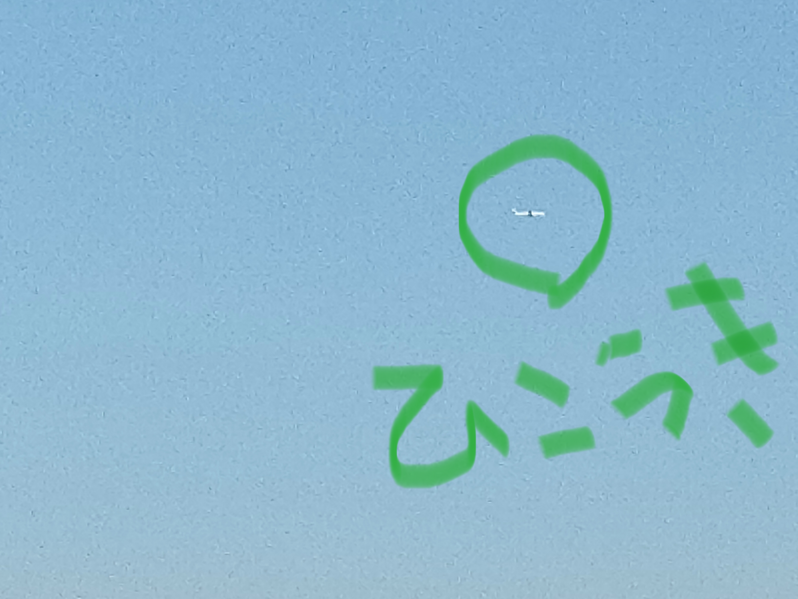

2026年8月号
おさんぽマルシェ新聞
値札には書かれない、野菜の旅。

ピックアップ
野菜には「旅の長さ」がある
これから少し先の未来、野菜の見方が少し変わるかもしれません。
今までは、野菜を見るときにまず気にするのは、値段、形、大きさ、鮮度。
でもこれからは、もうひとつの見方が少しずつ広がっていくかもしれないという話です。
それは、「この野菜は、どこから来たのか？」という見方です。
食べ物がどれだけ遠くから運ばれてきたかを見る考え方に、「フードマイレージ」という言葉があります。
遠くから運ぶほど、トラック、船、飛行機などの燃料を使います。
値札には書いていなくても、食品には、国内・国外からの「旅の長さ」もあります。
もちろん、近ければ何でも環境に良いと単純には言えませんが、野菜がどれほど旅をしてきたかも、一つの見方になります。
これからの日本。はたして、「もっと大量に、もっと遠くから、もっと便利に」
そんな未来が続くでしょうか？
1 / 5